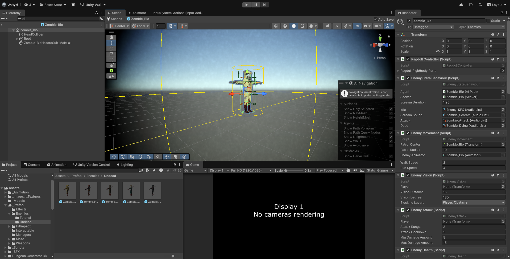
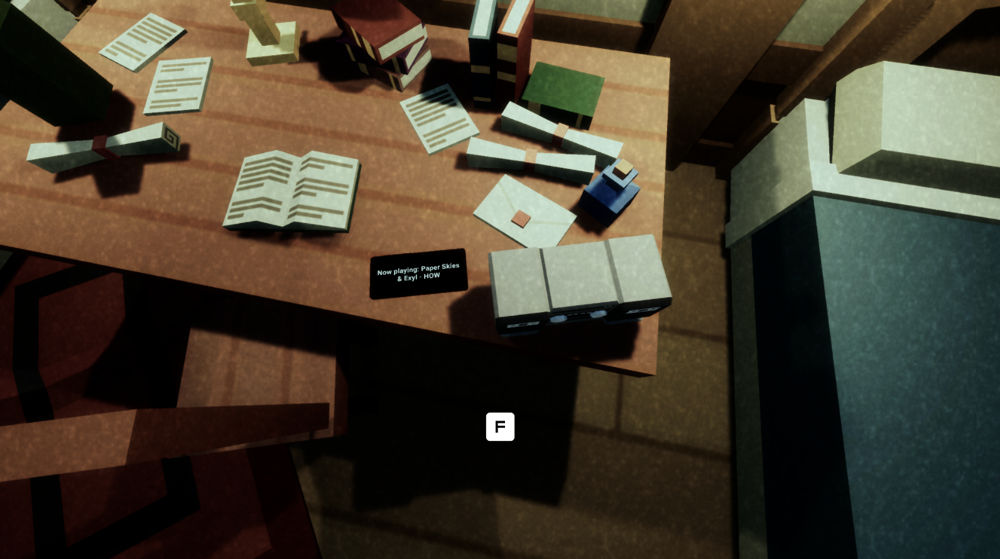
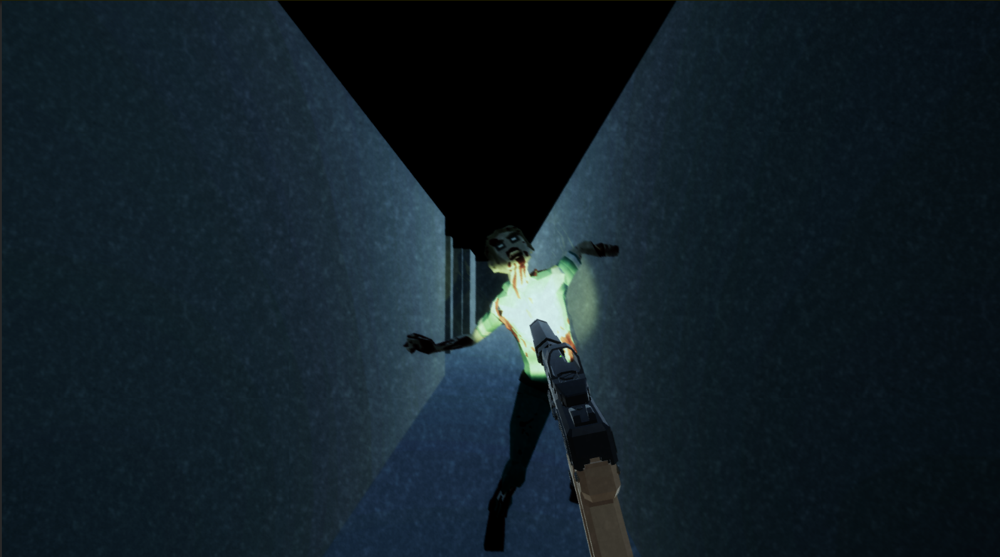
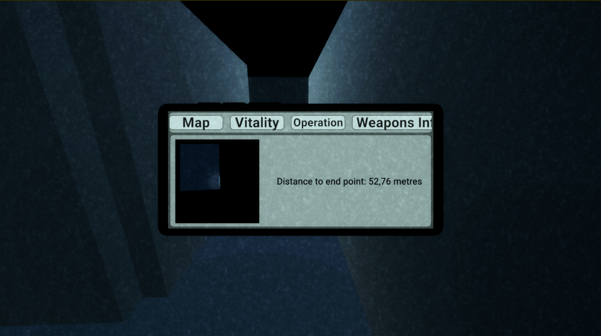

PROJECT SHOWYOURSELF - CODENAME G.A.T.E
IN SHORT
Codename G.A.T.E (Generative Adaptive Training Environment) đánh dấu sự trở lại chiến lược
của tôi đối với hệ sinh thái phát triển game nghiêm túc cấp quân sự, được thực hiện với một tư duy
chuyên nghiệp hoàn toàn tiến hóa. Là phiên bản kế nhiệm trực tiếp và trưởng thành hơn từ dự án cũ
Hyphen của tôi, G.A.T.E mở rộng sơ đồ mê cung dịch chuyển cơ bản thành một nguyên mẫu chiến thuật
phức tạp, vận hành dựa trên hệ thống.
Bằng cách tích hợp khả năng tạo màn chơi theo thuật toán (procedural generation), hệ thống theo dõi
của AI thích ứng, cùng các phản hồi xúc giác - âm thanh vũ khí đa tầng, dự án này là minh chứng thực
tế cho sự phát triển của tôi, chứng minh cách tôi kết nối thành công các khoảng cách trong sản xuất
để biến một ý tưởng tĩnh thành một thử thách chiến thuật sống động.
Để tự mình trải nghiệm trò chơi, vui lòng truy cập trang itch.io của Codename
G.A.T.E.
TỔNG QUAN DỰ ÁN VÀ SỰ PHÁT TRIỂN CỦA HỆ THỐNG
Để chứng minh một cách cụ thể sự tiến hóa chuyên nghiệp của mình trong một khung thời gian cô đọng chỉ
một năm, tôi đã chủ động tiếp cận theo hướng chấp nhận rủi ro cao để đổi lại thành quả lớn: cố tình tích
hợp các công nghệ xa lạ và kiến trúc cấp hệ thống trực tiếp vào vòng lặp lối chơi cốt lõi. Chiến lược
thiết kế của tôi tập trung vào hai phương diện rõ rệt: tối đa hóa trải nghiệm chiến đấu nhập vai thông
qua các cơ chế vi mô (micro-mechanics) tiên tiến, và đảm bảo giá trị chơi lại vô hạn thông qua tính khó
đoán mang tính hệ thống.
Đối với hệ thống điều khiển của người chơi, tôi đã sử dụng phương pháp phát triển mô-đun, tái sử
dụng các khung cơ chế bắn súng đã được kiểm chứng từ các dự án trước làm nền tảng. Sau đó, tôi liên tục
cải tiến mạnh mẽ trên nền tảng này bằng cách đưa vào các vòng lặp phản hồi có độ chân thực cao. Điều này
bao gồm việc xây dựng các tương tác vi mô như cơ chế kiểm tra đạn theo ngữ cảnh, không gian âm thanh nạp
đạn đồng bộ, và hệ thống cản âm thanh 3D định hướng nâng cao. Những bổ sung này đã hoàn toàn biến đổi
nguyên mẫu cơ bản thành một trải nghiệm đấu súng vô cùng sống động và chân thực.
Kiến trúc tạo màn theo thuật toán chống gian lận (Anti-Cheat Procedural Architecture)
Trong nguyên mẫu Hyphen cũ, người chơi có thể dễ dàng vượt qua độ khó của sơ đồ màn chơi chỉ
bằng cách ghi nhớ hình học tĩnh của mê cung. Để loại bỏ lỗ hổng này, tôi đã thiết kế một hệ thống tạo
màn chơi theo thuật toán ngay trong thời gian chạy (runtime procedural generation). Bằng cách loại bỏ
thiết kế bản đồ tĩnh để chuyển sang một ma trận mê cung ngẫu nhiên, tôi đã vô hiệu hóa thành công các
chiến thuật "chơi mẹo" của người chơi. Mỗi lượt chơi đều tạo ra các lối đi hình học duy nhất và các góc
nhìn không thể dự đoán trước, đảm bảo vòng lặp huấn luyện cốt lõi liên tục mang tính thử thách và kiểm
tra khả năng thích ứng không gian thuần túy.
Kỹ thuật AI & Rào cản tìm đường (AI Engineering & Pathfinding Hurdles)
Việc phát triển một ma trận mối đe dọa hấp dẫn trong một môi trường thay đổi liên tục đã tạo ra
những rào cản tính toán không gian nghiêm trọng. Tôi đã chọn cách đẩy giới hạn của bản thân bằng cách
triển khai một khung tìm đường A* (A* Pathfinding) tùy chỉnh để điều khiển hành vi của kẻ địch. Việc
điều hướng trong cấu trúc hình học được tạo ra khi đang chạy và các bức tường động dịch chuyển liên tục
đã khiến việc xác thực đường đi trở nên rất không ổn định. Mặc dù hệ thống AI cuối cùng gặp phải một vài
bất thường nhỏ về tối ưu hóa khi sơ đồ màn chơi thay đổi quá mạnh, quá trình phát triển này là một cột
mốc kỹ thuật vô giá. Nó mang lại cho tôi kiến thức thực tế sâu sắc về biên dịch đồ thị nút (node graph
compilation), điều hướng không gian trong thời gian chạy và lập trình trạng thái hành vi (behavioral
state programming).
CUNG CẤP TÀI LIỆU VÀ GIẢI PHÁP KIẾN TRÚC
Mặc dù thời gian sản xuất vô cùng hạn hẹp, tôi rất hài lòng với độ ổn định cấu trúc và chiều sâu hệ thống đạt được trong G.A.T.E. Để đảm bảo rằng toàn bộ ý đồ thiết kế, sự cân bằng cơ chế và kiến trúc hệ thống của tôi có thể được các nhà tuyển dụng và các trưởng bộ phận học thuật kiểm định một cách đầy đủ, tôi đã đính kèm một bản Tài liệu Thiết kế Game (GDD) sẵn sàng cho sản xuất bên cạnh bản build chạy trực tiếp trên trang Itch.io của mình. Tài liệu này phác thảo một cách hệ thống các trụ cột cốt lõi, các số liệu vũ khí toán học và thuật toán nhịp độ không gian của chúng tôi.




CÁC ĐIỂM NỔI BẬT CHÍNH VỀ THIẾT KẾ
01 / Kiến trúc hệ thống chống gian lận (Anti-Cheese)
Thay thế thành công thiết kế bản đồ tĩnh dễ phát sinh lỗi bằng một ma trận tạo màn chơi theo thuật toán ngay trong thời gian chạy, đảm bảo giá trị chơi lại tuyệt đối và bắt buộc người chơi phải điều hướng không gian thực tế thay vì chỉ ghi nhớ bản đồ thuần túy.
02 / Tái sử dụng mã nguồn & Tài nguyên dạng mô-đun
Chứng minh khả năng quản lý sản xuất hiệu quả bằng cách tái sử dụng các khối mã nguồn chiến đấu cốt lõi từ các dự án trước, cho phép tôi tiết kiệm hàng giờ quan trọng trong quy trình sản xuất và phân bổ lại nguồn lực cho các tính năng phản hồi xúc giác - âm thanh nâng cao.
03 / Khả năng thích ứng kỹ thuật & Phân tích hậu kỳ AI
Chủ động đối mặt với các hạn chế kỹ thuật không gian phức tạp bằng cách triển khai thuật toán tìm đường A* (A* Pathfinding). Chuyển đổi thành công các điểm nghẽn thuật toán thành một nghiên cứu tình huống kỹ thuật chuẩn xác về logic điều hướng hành vi trong bản đồ động.